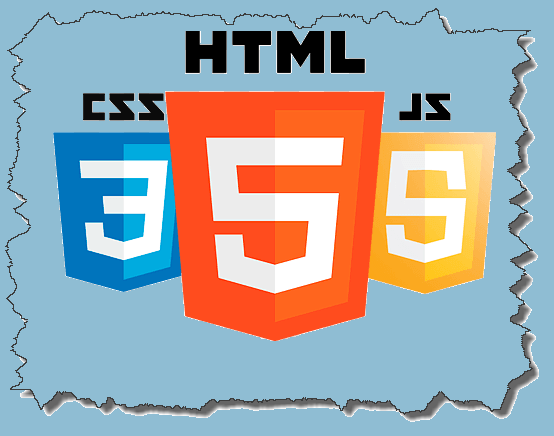

Sintaxis y Selectores CSS e Interacción Humano Ordenador

Inicio
Temas
Selectores CSS
Sintaxis CSS
Interacción Humano Ordenador
Recursos Digitales
Recursos Digitales CSS
Recurso Digitales Interacción Humano Ordenador
Aprendizaje
Actividad 1
Actividad 2
Acerca de
Quiz created by Steven Claros with GoConqr